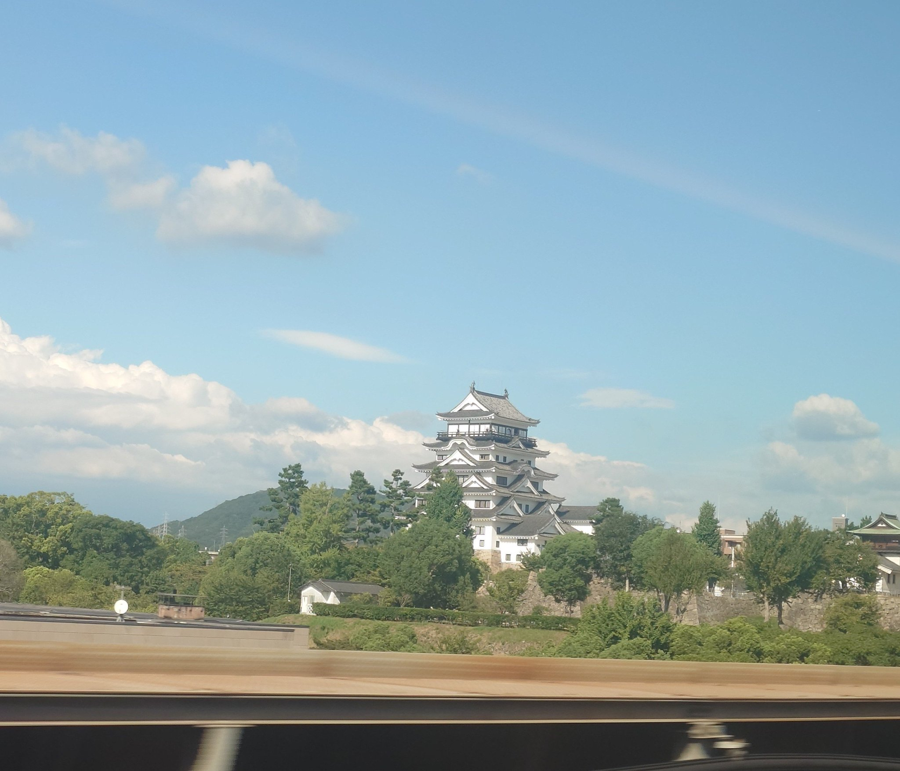

- 席側
- E席側西へ向かうなら右側、東へ向かうなら左側。
- 探す場所
- 福山駅のすぐ北
THE STORY
白い天守の裏に、黒い守り
福山駅のすぐ隣に現れる白い天守。遠くの街並みの上に城を探す姫路や岡山とは違い、福山では石垣と木立の向こうから城がぐっと近づきます。ただ、窓から見える白い姿は福山城の一面。同じ天守の反対側には、黒い鉄板張りという珍しい守りがあります。
この城を築いたのは、初代福山藩主の水野勝成です。1619年にこの地方を治めることになり、1622年に城を完成させました。一国一城令のもとで大規模な新しい城が認められた背景には、幕府が西日本への備えを重視していたことがあります。城は領地を治める場所であると同時に、幕府の力を示す拠点でもありました。
白壁の天守には、唐破風や千鳥破風と呼ばれる装飾的な屋根が重なります。一方、北側は城の外が近く、防御を強めるために鉄板で覆われていました。福山市は、天守の外壁を鉄板張りにした例を全国唯一と紹介しています。車窓で見る白い南面と、黒い北面は、見せる姿と守る仕組みの違いを伝えるものです。
城をつくるときには、京都の伏見城の建物も移されました。伏見櫓はそのひとつで、梁から見つかった刻印が移築の来歴を裏づけています。戦災を免れた櫓は、再建された天守とは異なり、築城時から受け継がれてきた建物。福山城には、復興した姿と残された姿が並んでいます。
現在の天守は、江戸時代の建物そのものではありません。1945年の福山空襲で焼失したあと、1966年に市民や企業の寄付を得て再建されました。写真の白い天守には、城を街のシンボルとして取り戻した人々の思いも重なっています。
2022年の築城400年に合わせた「令和の大普請」では、古写真などを調べ、北側の鉄板張りや最上階の窓の姿を復元しました。新幹線からは鉄板張りを直接見る向きではありませんが、白い天守を見つけたあとにその裏側を知ると、駅の隣の城が単なる風景から、守りと復興の歴史を持つ建物へ変わって見えてきます。
WHAT TO SEE
窓から探すには
福山駅のすぐ北、E席側を見ます。新大阪から西へ向かう列車では進行方向の右側、東へ向かう列車では左側です。木立の上の白い壁と、何段も重なる屋根を目印にしてください。姫路城や岡山城のように遠くの街を探すより、駅の近くで石垣の上へ視線を向ける車窓です。
城と線路が近いため、近づいてからカメラを向けると追いつかないこともあります。駅に入る前から窓側へ目を向けておきましょう。停車する列車と通過する列車では眺める余裕が異なり、見える時間を一律の秒数では案内できません。
列車から見るのは天守の南側です。黒い鉄板張りは反対の北側なので、車窓で黒い壁を探す必要はありません。まず白い天守を見つけ、写真や公式の案内で別の面を知ると、短い出会いから城の特徴をたどれます。
PHOTO TIPS
天守だけでなく、石垣も入れる
まずは掲載写真のように、木立と石垣を含む少し広い画角で待ちます。近い城を大きくズームして追うより、白い天守が入る余白を残すほうが、動く車窓の中で形をつかみやすくなります。屋根だけでなく石垣も入ると、城が線路のすぐ隣に立つ感じが伝わります。
窓の反射にも気を配り、席から無理なく撮りましょう。撮ることに集中して見逃しそうなら、まず自分の目で白い天守を眺めるだけでも十分です。写真はある列車・ある瞬間の記録で、同じ大きさや見え方が毎回続くわけではありません。
ON THE MAP
城と線路の位置
新幹線の視点は福山駅の位置を示しています。写真の撮影位置や、見える範囲を示すものではありません。
Googleマップで開く ↗